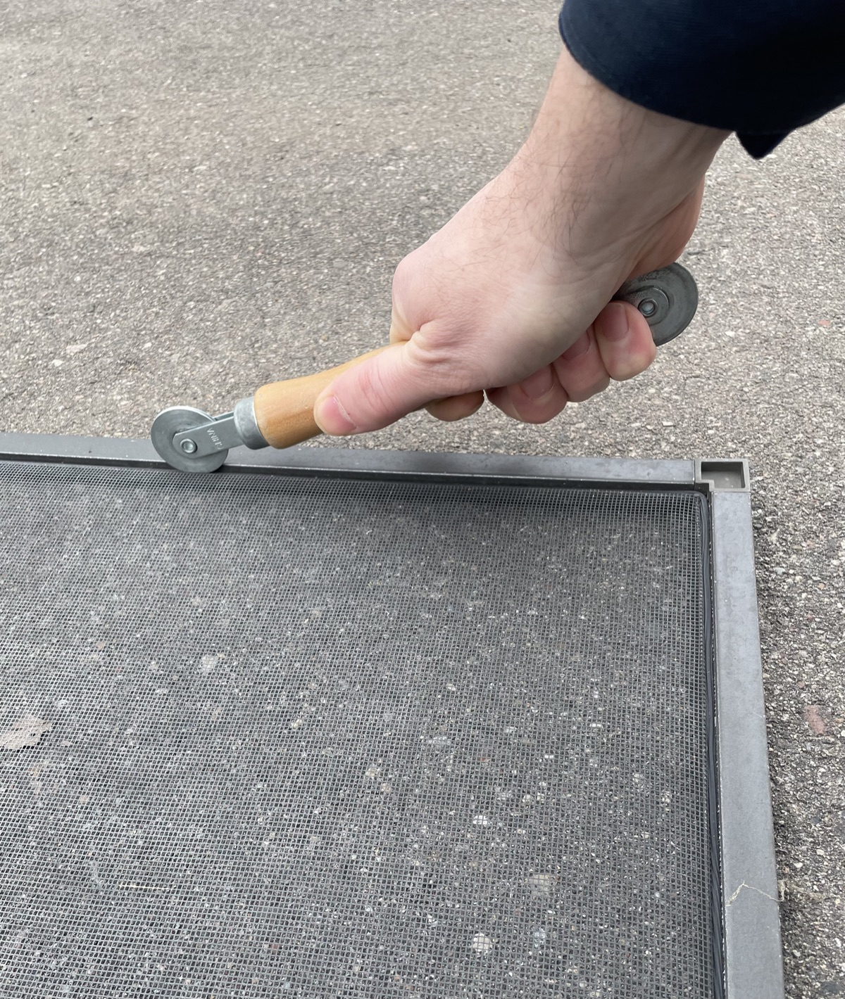

Welcome to Screen Fix Pro: Burnsville's mobile screen repair experts.
From ranch homes near Alimagnet Lake to wooded lots along Burnsville Parkway, we repair window screens, door screens, and aging aluminum storm-window frames — on-site, no shop trip required.
Serving Burnsville and the surrounding south metro — helping homeowners enjoy hassle-free, bug-free living.
Burnsville's housing stock skews older — much of the city was built out in the 1960s through 1980s, when aluminum storm windows were standard and lots were heavily wooded. That combination means screens take a beating: falling branches, debris from mature trees, and decades of wear on frames that weren't built to last forever.
We regularly work in neighborhoods near Alimagnet Lake, Crystal Lake, and the wooded lots along Burnsville Parkway. If your screens are in older storm-window frames, we can repair or replace the mesh. If the frame itself is bent or corroded, we'll tell you upfront whether it's worth patching or better replaced entirely.
Repair or replace screens in older aluminum storm-window frames common in Burnsville's established neighborhoods — on-site assessment included.
Repair or replace screens on patio, storm, or entry doors for smooth, reliable function.
Rescreen porches, patios, or gazebos.
We serve Burnsville and surrounding south metro communities in Minnesota, including Lakeville, Bloomington, and nearby areas.
Yes — we're a fully mobile service. We come to you in Burnsville, so there's no need to remove or transport your screens.
We repair and replace window screens — including mesh in older aluminum storm-window frames common throughout Burnsville — plus door screens (patio, storm, and entry) and porch rescreening.
Pricing varies by job size and materials. We offer free, no-obligation quotes — fill out the form below and we'll be in touch within 24 hours.
We typically book within a few days of first contact in Burnsville. Spring is our busiest season — aluminum storm-window repairs and whole-home re-screens stack up fast. Request your quote early.
Yes. Aluminum storm-window frames are common in Burnsville's older neighborhoods, and we work with them regularly. If the mesh is the issue, we re-screen it on-site. If the frame is damaged, we'll assess whether repair or full replacement makes more sense — and tell you before we start.
Fill out the form below to get started and we'll contact you to schedule a no-obligation assessment.
Questions? Email us at info@screenfixpro.com